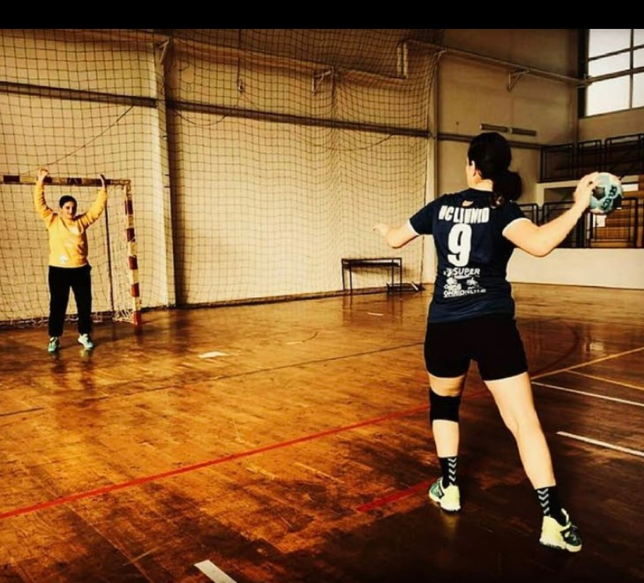
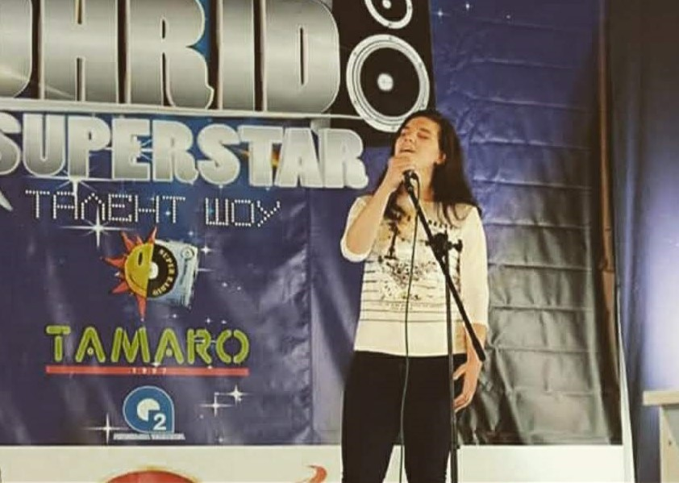

Jana's passion for handball shaped a significant part of her life and fostered a competitive spirit within her. She embarked on her handball journey at the age of 10 and dedicated eight years to the sport. Jana's initial three years were spent at the renowned Metalurg club, where she honed her skills and developed a deep love for the game. Later, she transferred to Lihnid, where she continued her handball journey for five more years.
At Lihnid, Jana's talent and dedication propelled her into the competitive arena of national tournaments. By the time she turned 16, she demonstrated her remarkable abilities by playing in the first lineup alongside players from both the 2002 and 2000 generations. Her commitment to the sport yielded numerous tournament appearances, but two stand out in her journey. Notably, Jana and her Lihnid team achieved remarkable success, winning the championship in a tournament held in Serbia (2017) and showcasing their skills on an international stage in the Netherlands(2018).
However, Jana faced a difficult decision at the age of 18. Faced with the challenging conditions within women's handball in Macedonia, she made the courageous choice to redirect her focus toward her burgeoning music career. With a heavy heart, Jana bid farewell to the sport that had given her so much joy and decided to explore her passion for music on a deeper level.
Jana's transition from handball to music marked a pivotal turning point in her life. While she left the competitive arena behind, her competitive spirit and dedication remained steadfast. With her unwavering determination and love for music, Jana embarked on a new path, ready to make her mark in the world of melodies and lyrics.
Jana's passion for singing was evident from a young age, and she eagerly seized every opportunity to showcase her vocal talents. In sixth grade, at just 11 years old, Jana got her first taste of performing on stage with her school choir. They not only sang in competitions but also mesmerized audiences during national holiday celebrations. Encouraged by the positive response to her singing, Jana fearlessly took a leap and signed up for a singing competition in her hometown when she turned 13. Against the odds, despite her young age and lack of formal music education, she advanced through three rounds of the competition. Throughout her primary school years, Jana continued her involvement in choir,for another four years. This dedication spilled over into her high school years, where she received an invitation to join the high school choir. Initially assigned to sing soprano in her first year, Jana showcased her versatility and vocal range by transitioning to the tenor voice in the following years. For three years, she added her melodious voice to the choir's harmonies, contributing to their captivating performances.
Jana's musical journey took an exciting turn during her first year of high school when she participated in a duet for a charity concert. It marked her official debut as a performer in front of a crowd, and the event proved to be a resounding success. The concert's overwhelming popularity resulted in sold-out tickets, raising substantial funds for the charitable cause.
Amid the challenges posed by the COVID-19 pandemic, Jana's singing endeavors took a temporary pause. Determined to make the most of her time, she decided to embark on a new musical pursuit and taught herself to play the guitar. Armed with online resources and chord diagrams, she delved into the intricacies of guitar playing, expanding her musical repertoire.
In her final year of high school, Jana resolved to prioritize her music career and enrolled in an Erasmus+ project for young musicians. This remarkable opportunity allowed her to travel to Barcelona, Ljubljana, Toulouse, and Skopje, immersing herself in diverse musical cultures. During the project, Jana actively participated in the creation of songs. In two exchanges, she displayed her musical versatility by playing and composing electric guitar parts, while in the other two exchanges, she showcased her talent as a lyricist and vocalist. This transformative experience broadened her horizons, exposing her to new musical techniques and genres. The Erasmus+ project further ignited Jana's love for music, fueling her passion as she continued to explore and refine her musical talents. With each passing day, her commitment to music grows stronger, paving the way for a future filled with creativity, artistic expression, and endless possibilities.
Jana's unwavering passion for music, coupled with her innate talent and relentless drive, sets the stage for an exciting future filled with creativity and boundless possibilities. As she continues to explore and refine her musical abilities, Jana's remarkable journey serves as an inspiration to others pursuing their artistic passions.